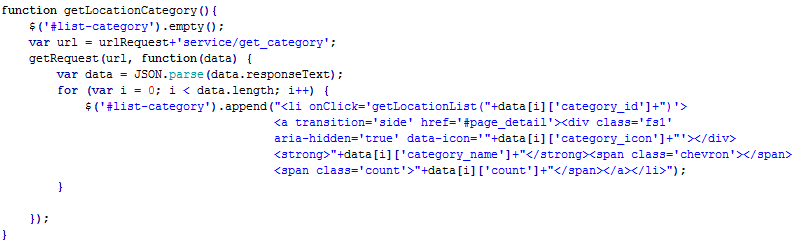
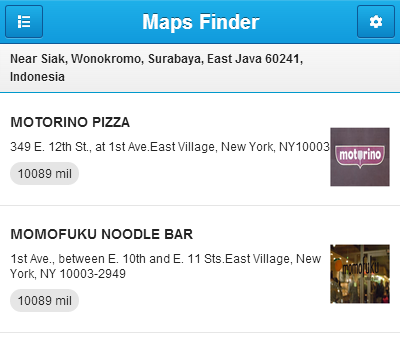
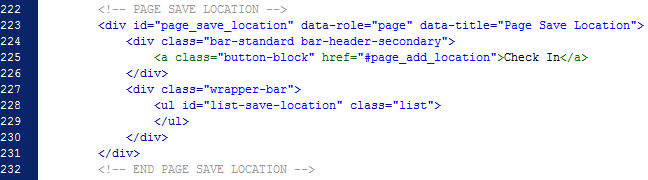
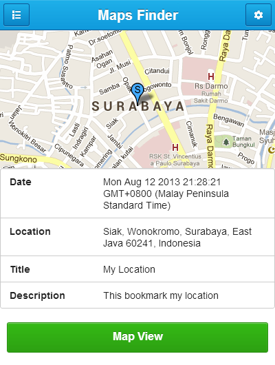

“Maps Finder App ” Documentation by “Template Author” v1.0
“Maps Finder App V.2 ”
Created: 08/26/2014
By: Rizal Saleh
Email: rizal.saleh1@gmail.com
Thank you for purchasing my app. If you have any questions that are beyond the scope of this help file, please feel free to email via my user page contact form here. Thanks so much!
Table of Contents
- Overview
- Installation
- Database Structure
- HTML Structure
- PHP Structure
- CSS Files and Structure
- JavaScript
- Platform Guides
- Sources and Credits
A) Overview - top
Maps Finder App is a navigation tool designed for helping people when travelling to different city for displays places near to user's. This app is perfect for those of you who want to develop maps applications based on mobile phone.
Before we start, lets take a look on the folder structure of the app. All app files are placed in the MAPS_FINDER_ APP folder. The MAPS_FINDER_ APP folder consists of 4 more folders for diferent types of app assets:
- Admin - containing all admin files, for administration data application.
- Application - containing all app files, HTML, the theme specific CSS and JS files.
- Database - Database application and sample data.

B) Installation - top
1. Server Requirements - top
- PHPÂ version 5.1.6 or newer.
- A Database is required for most web application programming. Current supported databases are MySQL (4.1+), MySQLi, MS SQL, Postgres, Oracle, SQLite, and ODBC.
2. Upload Files - top
- Extract the main zip file, and then upload the application folder to your server for front end, if you want to make in the form of the native application using phonegap framework you can follow these steps.
- Extract the main zip file, and then upload the admin folder to your server for back end.
3. Configuration Files - top
a). Front End
Open maps.js file from folder js and edit these values :
Change this with your url path of this admin.
b). Back End
Open database.php file from folder application/config and edit these values :
Change this with your database settings (host, user, password, database name, database driver).
4. Database Setup - top
- Create a database in mysql, I suggest using phpMyAdmin.
- In your phpMyAdmin, type your database name in the Create new database field, and click Create.
- After database created, click on the Import menu, browse install directory, select database/maps.sql (if you want to install database + sample data) .
- Click Go to import the sql file.
- Your database should be installed now.
C) Database Structure - top
The database has 4 tables: category, markers, images and user.
1). Category
- category_id
- category_name
- category_icon
- category_marker
- category_desc
2). Markers
- markers_id
- markers_category_id
- markers_name
- markers_logo
- markers_phone
- markers_address
- markers_lat
- markers_lng
- markers_url
- markers_desc
3). Images
- images_id
- images_markers_id
- images_name
- images_url
- images_desc
- images_update
4). User
- user_id
- user_name
- user_password
- user_update
D) HTML Structure - top
a). Front End
On this application composed only of a single HTML document contain multiple "pages" that are loaded together by stacking multiple divs with a data-role of "page". Each "page" block have unique id (id="foo") that will be used to link internally between "pages" (href="#foo"). When a link is clicked, the framework will look for an internal "page" with the id and transition it into view.
Here is an list of internal pages that exist in the index.html file :
- Main
- Sidebar Left Menu
- Sidebar Right Menu
- Page Home
- Page Location List
- Page Nearby
- Page Save Location
- Page Add Save Location
- Page Detail Save Location
- Page Location Map
- Page Detail Location
- Page Location Route
b). Back End
Admin pages are built using the CodeIgniter framework with ajax technology to process login, load the page and processing the form.
Here is an list of pages in admin :
- Login
- Page Home
- Page Add Category
- Page Add Location List
- Page Add Location Images
- Page Setting
A). Front End
1.1 Main - top
You can see the common markup and data structures main as follows :
if you want to add a new page you can insert it into the div (class="content").
1.2 Sidebar Left Menu - top
Slidebar left menu to display a list of all button link menu app.
- The structure of the content is as follows :
If you have add active style into menu add class "active" to (<li class="active">) or add icon insert tag (span="icon-class-name") inside tag <li>.
- The following script in files js/app.js find lines 4-40 this is used to response slidebar left menu for action :
1.3 Sidebar Right Menu - top
Slidebar right menu to display a list of all button setting menu app.
- The structure of the content is as follows find lines 72-125 :
- The following script in files js/app.js find lines 58-72 this is used to save user setting in local storage :
1.4 Page Home - top
Page to display the dashboard application.
- The structure of the content is as follows :
If you have add icon insert tag div(data-icon="icon name") inside tag <a>, for list icon you can see it in fonts/icomoon/list-icon.html.
1.5 Page Location List - top
Page to display the category of the page list location.
- The structure of the content is as follows :
- The following script in files js/maps.js find lines 282-292 this is used to load data from database :
1.6 Page Nearby - top
page to display the nearest location that was around the user .
- The structure of the page is as follows :
- The following script in files js/maps.js find lines 334-347 this is used to load data from database :
1.7 Page Save Location - top
Page to display the data from the storage location of the user.
- The structure of the page is as follows :

- The following script in files js/maps.js find lines 378-390 this is used to load data local storage :
1.8 Page Save Location - top
Pages to store data where the location and a description of the current user .
- The structure of the page is as follows :
- The following script in files js/maps.js find lines 361-375 this is used to save local storage :
1.9 Page Detail Save Location - top
Pages to store data where the location and a description of the current user .

- The structure of the page is as follows :
- The following script in files js/maps.js find lines 361-375 this is used to save local storage :
1.10 Page Location Map - top
Page to display the location data into maps .
- The structure of the page is as follows :

- The following script in files js/maps.js find lines 91-182 this is used load data map :
1.11 Page Detail Location - top
Page to display the detail location information.
- The structure of the page is as follows :
- The following script in files js/maps.js find lines 412-442 this is used load detail location information :
1.12 Page Location Route - top
Page to display the location route .
- The structure of the page is as follows :
- The following script in files js/maps.js find lines 105-116 into function init() this is used show map route :
2). Back End
2.1 Login - top
Page to login into the admin page, source file (aplication/views/login.php).
- The structure of the page is as follows :
- The following script find lines 42-67 this is used to do the processing login sistem :
2.2 Page Home - top
Page to display the location of all the data that has been input into the database, source file (aplication/views/home.php).
- The structure of the page is as follows :
2.3 Page Add Category - top
Page to login into the admin page, source file (aplication/views/category.php).
- The structure of the page is as follows :
- The following script find lines 208-226 this is use to perform the data request to database :
E) PHP Structure - top
On the admin page application using CodeIgniter framework, in which to apply the concept of MVC.
1. Datatables - top
The application is equipped with a libraries datatables where you just need to follow the example of its use as follows :
Sample use in category, source file (aplication/controllers/category.php) :
2. Insert Data - top
Sample use insert data in category, source file (aplication/controllers/category.php) :
3. Remove Data - top
Sample use remove data in category, source file (aplication/controllers/category.php) :
F) CSS Files and Structure - top
1. Front End
The theme comes with several CSS (stylesheet) files grouped in the CSS folder:
- app.css - the main CSS styling for the app.
- ratchet.css - CSS file containg the layout styling for the app.
- icomoon.css - CSS file for icon app.
- snap.css - CSS for sidebar menu app.
- transition.min.css - CSS for transition page app.
2. Back End
The theme comes with several CSS (stylesheet) files grouped in the CSS folder:
- style.css - the main CSS file containg the layout styling for the app styling for the admin.
- chrome-bootstrap.css - CSS styling for the admin.
- icomoon.css - CSS file for icon admin.
- login.css - file containg the layout styling for the login admin.
- tables.css - CSS for style datatables.
If you would like to edit or change any color, font, or style of any elements in the template, you must edit the general CSS file (style.css). If you would like to change the general background for admin content for example, you would change the following :
body {
font: 13px/20px 'Helvetica Neue', Helvetica, Arial, sans-serif;
color: #404040;
background: #596778;
background-image: url(../images/retina_wood.png);
}
G) JavaScript - top
1. Front End
This app imports Four Javascript files. All JS files are placed in a separate folder called "js". The list of files is as follows:
- app.js
- maps.js
- ratchet.js
- snap.min.js
- transition.min.js
- jquery.min.js
All JS functions related to the app content management are placed in maps.js. The maps.js file is responsible for the main functions like connect to database, and etc
- For example - If you calls synchronous requests GET and POST :
2. Back End
This app imports Four Javascript files. All JS files are placed in a separate folder called "js". The list of files is as follows:
- map.js
- map.location.js
- jquery.min.js
- jquery.form.js
- jquery.dataTables.columnFilter.js
- jquery.dataTables.min.js
- jquery.dataTables.reload.js
H) Platform Guide - top
This section tells you all you need to know to set up your development environment to support each platform: where to obtain the SDK, how to set up device emulators, how to connect devices for direct testing, and managing signing key requirements.
- Phonegap build Guide
- Android Platform Guide (Windows, Mac, Linux)
- BlackBerry Platform Guide (Windows, Mac)
- BlackBerry Platform Guide 10 (Windows, Mac)
- iOS Platform Guide (Mac)
- Windows Phone 7 Platform Guide (Windows 7 or 8)
- Windows Phone 8 Platform Guide (Windows 8)
- Windows 8 Platform Guide (Windows 8)
- Tizen Platform Guide
I) Sources and Credits - top
I've used the following scripts :
-
Ratchet
http://maker.github.io/ratchet/ - jQuery
http://jquery.com/ - Snap JS
https://github.com/jakiestfu/Snap.js/ - Datatables
http://datatables.net - Jquery Form
http://malsup.com/jquery/form/ - Phonegap
http://phonegap.com/ - Icomoon
http://icomoon.io/ - Patterns
http://subtlepatterns.com - Map Icons
http://www.webiconset.com/map-icons/
Once again, thank you so much for purchasing this app. As I said at the beginning, I'd be glad to help you if you have any questions relating to this app. No guarantees, but I'll do my best to assist. If you have a more general question relating to the app on Codecanyon, you might consider visiting the forums and asking your question in the "Item Discussion" section.
Rizal Saleh